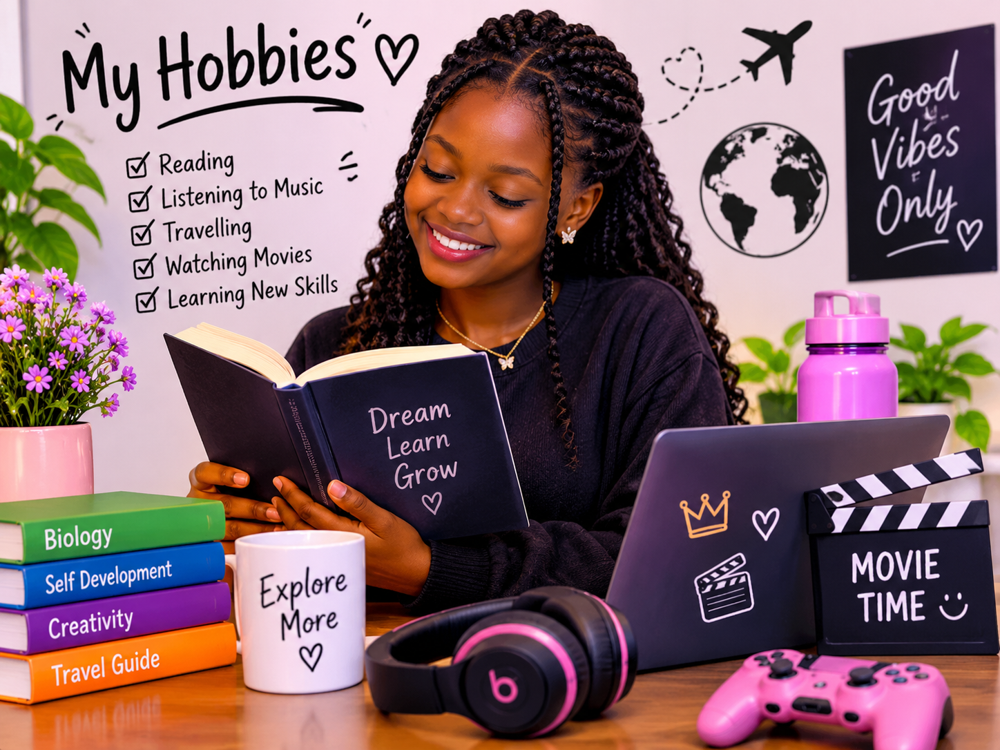

My Favourite Activities

During my free time, I enjoy participating in activities that help me relax, explore new ideas and develop new skills. My hobbies also allow me to learn more about the world around me.
My Hobbies
- Reading: I enjoy reading because it helps me gain knowledge and improve my understanding.
- Listening to Music: Music helps me relax and enjoy my free time.
- Travelling: I enjoy exploring new places and experiencing different environments.
- Watching Movies: I enjoy watching interesting and entertaining films.
- Learning New Skills: I like developing new abilities and discovering new things.
Why I Enjoy My Hobbies
These activities make my free time enjoyable and meaningful. They help me stay curious, creative and open to learning new things.